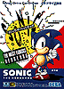
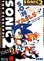
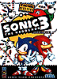
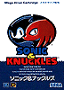

|
夢のプロジェクトがついにセガサターンで実現！ １９９７年、「ＰＲＯＪＥＣＴ ＳＯＮＩＣ」始動！！
|
”第１弾”
「ソニック ジャム」
セガサターンにヤツらが帰ってき
た！
６月発売予定：予価４８００円 |

ATTENTION１：ソニックのすべてがわかる「ソニック ワールド」！！
この「ソニック ジャム」に追加された新要素のひとつが「ソニック ワールド」だ。
フル３Ｄのポリゴンで構成された「ソニック ワールド」の中をソニックが走りまわり、キャラクターの歴史やゲーム年表、ソニックをテーマに描かれたさまざまなイラスト、サウンド、メガドライブやジェネシス(海外用メガドライブ)版のマニュアル(中味まですべて収録してるのだ)など、ソニックシリーズのありとあらゆる資料を回覧することができるぞ。
ソニックに関する知識はこれでカンペキだ！！
ATTENTION２：親切機能も満載！
収録された４タイトルすべてにおいて、タイムアタックやスペシャルステージのみを遊ぶモードを新たに追加。
また「ソニック＆ナックルズ」では、メガドライブ版の特色であった「ロックオン・システム」機能ももちろん再現されている。まさに至れり尽せりだ！
ATTENTION３：そしてさらに……？
このソフトのために新たに制作されたオリジナルのオープニングＣＧムービーもある。
サターンでは意外にも初めての登場となるＣＧレンダリングソニックの姿は必見だ。
そのほか、「ソニック１」でスピンダッシュが可能になっていたり、ＰＬＡＹしたＡ
ＣＴは、オートセーブ機能により、いつでもつづきが遊べるぞ。
●参考：ＪＡＭに収録されるソニックシリーズを紹介
 ソニック・ザ・ヘッジホッグ
＜音速針鼠さっそうと登場！＞
１９９１年、セガが満を持して発表したシリーズ第１弾。
それまでにはないクールなセンスと独特の高速アクションが好評となり、日本だけでなく全世界で大ブレイク。
超音速ハリネズミの伝説はここから始まった。

ソニック・ザ・ヘッジホッグ２
＜キュートな相棒はしっぽが２本！＞
翌年発売のシリーズ第２弾ではキュートなキツネの「マイルス“テイルス”パウアー」が相棒となり、２人同時プレイも可能に。
スピード感や各ゾーンの仕掛けも更にグレードアップし、前作以上の完成度を誇った。画面を２分割して行う対戦プレイも嬉しい。

ソニック・ザ・ヘッジホッグ３
＜ヤツは敵？ それとも味方？＞
前作より２年、なんと２部作となった「３」。その前編とも言えるのがこの作品だ。
ことあるごとにソニックに迫る謎のキャラクター「ナックルズ・ザ・エキドゥナ」が登
場。各ゾーンの仕掛けもさらに洗練された。

ソニック＆ナックルズ
＜シリーズ最高峰はロックオン・カートリッジ＞
「ソニック３」の半年後、謎のベールに包まれ、その存在を明らかにした本作品。
カートリッジの上にさらにカートリッジを差し込むという「ロックオン・システム」の採用で、ゲームの幅がますます広がった。
今度はナックルズもプレイヤーキャラとして参加する。
そして…
１９９７年末、セガサターンで、ソニック最新作がベールを脱ぐ…
…